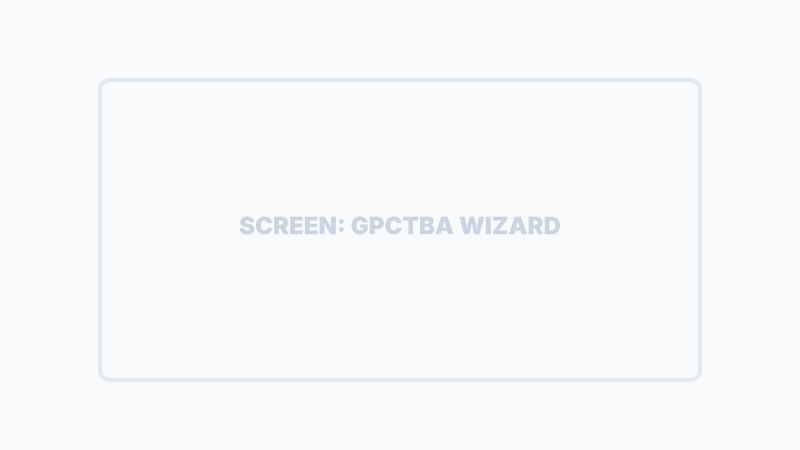

Interazione con i Clienti
Il cuore della Customer Experience SiTeBoS è il Bot Telegram intelligente: un assistente capace di gestire l'intero funnel di vendita, dall'accoglienza al pagamento finale.
L'Assistente AI (NplGate)
Il bot non è un semplice risponditore automatico. Grazie al protocollo NplGate, l'IA interagisce in modo umano e contestuale.
Main Menu: Una tastiera Telegram intuitiva permette all'utente di accedere istantaneamente alle funzioni principali: Assistente, Catalogo, Minisito, Profilo e Supporto.
Riconoscimento Identità: Il bot riconosce i clienti registrati, offrendo un'esperienza personalizzata basata sullo storico ordini.
Protocollo Handover: Se l'IA non è in grado di risolvere una richiesta, passa istantaneamente la mano a un operatore umano.
Dashboard Personale Tenant
La dashboard del tenant è il punto di accesso personalizzato per ogni utente, che permette di interagire con i servizi aziendali.

Ecommerce e Ordini
I tuoi clienti possono navigare il catalogo e acquistare prodotti o servizi senza mai uscire da Telegram, utilizzando una WebApp fluida e veloce.
Visual Browsing
GPS Checkout
Order Tracking
Centro Assistenza
Gestione prioritaria delle richieste di supporto tramite ticket integrati.
Wizard Preventivi (Modello GPCTBA)
Per le vendite complesse, SiTeBoS utilizza un wizard strutturato basato sul framework GPCTBA per qualificare il lead prima di inviarlo al titolare.

Notifiche e Handover
Il sistema mantiene il cliente sempre aggiornato sullo stato degli ordini e sulla gestione dei ticket di supporto.